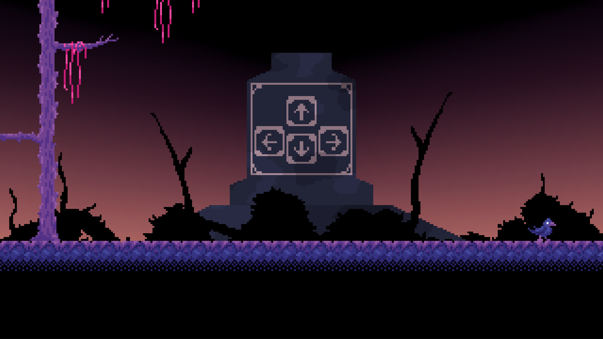

I may be know to made a game or two
This is a platforming game that I made almost entirely during free time I had at school during 11th grade. It is based heavily on celeste. This is a rare situation where I made a game that is finished, although I have been working a little bit on a remake of this game that would be much better. If I finish it, that is.
Also this (and most other games here) only has Windows support and since I made it in Gamemaker I no longer can export the project for other platforms.
This game also has a speedrun.com page for some reason. It has an astounding one (1) run!
Made with Besherba and 8TempesT8
A game I made with some friends for the BenBonk Game Jam #4. I would say that this is actually a pretty decent game, except that there is so little instruction that I cannot imagine anyone who didn't help develop it naturally beating it. Maybe I'm exaggerating.
As this was made for a game jam, the scope
I am sometimes making this game
Here is a single image as a preview. Maybe there will be more to come?

I have a playlist of small videos showing some development of this game here
Okay I'll be honest I don't feel like adding my other games to this page rn and i should go to bed soon but i have other stuff at kvoi.itch.io so like yeah